Disseny del pont¶

El programa de disseny del pont "Bridge Designer " proporciona una introducció pràctica a l'enginyeria mitjançant una experiència de disseny autèntica i realista.
Aquest programari proporciona les eines per dissenyar, provar i optimitzar un pont d’acer d’autopista, basat en especificacions realistes, restriccions i criteris de rendiment.
Un dels objectius del programa és minimitzar la quantitat de material utilitzat en la construcció, ja que correspon a un criteri ecològic.
El Bridge Designer és un programari per a Windows i Mac OS X, de domini públic i públic. Es proporciona i només està destinat a ús educatiu.
Enllaços¶
- El dissenyador del pont. Pàgina principal.
- `El dissenyador del pont. Descarregueu <http://bridgedesigner.org/download/> `__
- Instal·lador de Windows de la pàgina Forge Source. <https://sourceforge.net/projects/wpbdc/files/current%20release/jre/setupbdv16j.exe/download> ` `` `` `` `` `` `` ``
- Bridge Designer 1.6 <../_ Static/Downloads/Bridge-Disigner-Stup-V16J.exe> __
Exercicis¶
Dissenyeu un pont amb el codi ** BRI02A ** i la plantilla ** a través de Truss - Warren ** per tenir el menys cost possible.
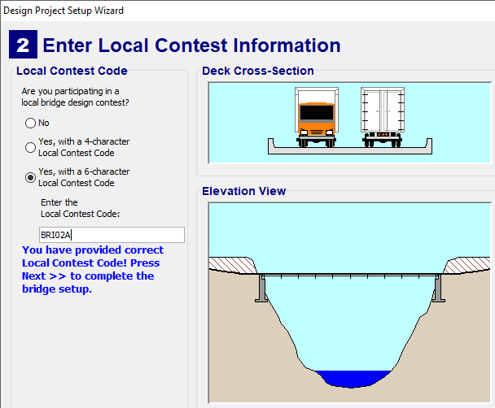
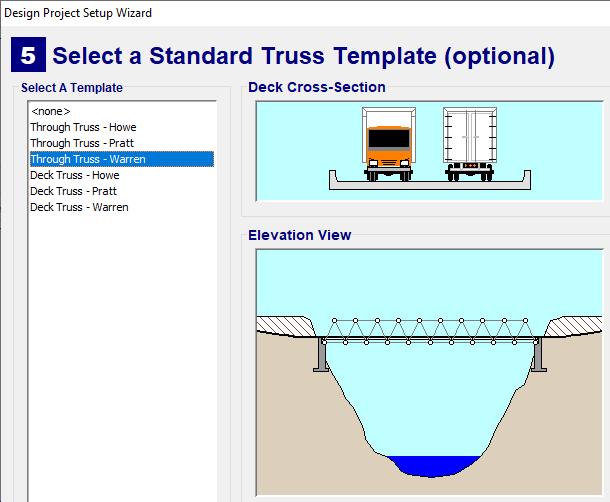
; BR |
Dissenyeu un pont amb el codi ** BRI02A ** i la plantilla ** a través de Truss - Howe ** per tenir el menys cost possible.
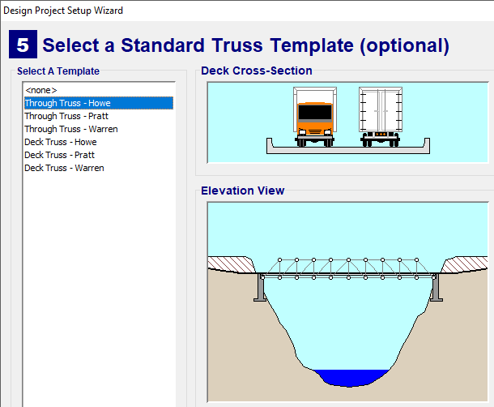
; BR |
Dissenyeu un pont amb el codi ** BRI23A ** i plantilla ** Arch continu - Warren ** per tenir el menor cost possible.
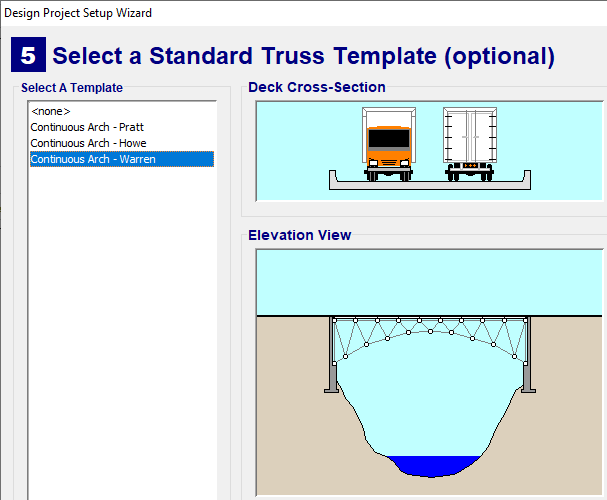
; BR |
Dissenyeu un pont amb el codi ** BRI23A ** i plantilla ** Arch continu - Pratt ** per tenir el menor cost possible.
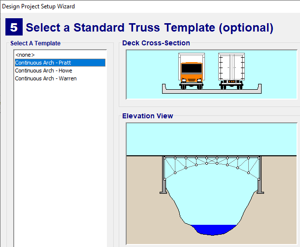
; BR |
Dissenyar un pont amb el codi ** BRI12C ** i la plantilla ** es van mantenir Warren Truss Cable ** per tenir el cost més baix possible.
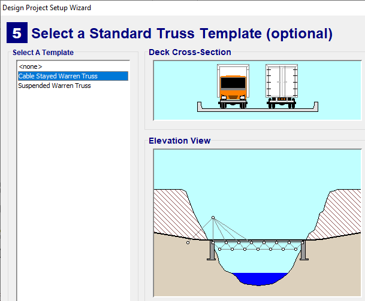
; BR |
Dissenyar un pont amb el codi ** BRI15A ** i la plantilla ** es van mantenir Warren Truss Cable ** per tenir el cost més baix possible.
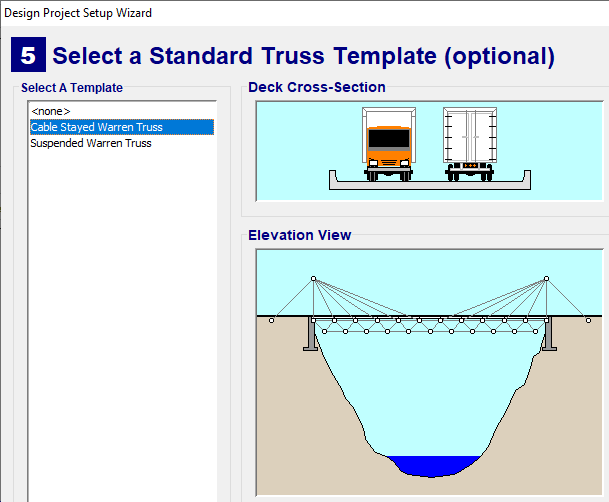
; BR |
Dissenyeu un pont amb el codi ** BRI15A ** i la plantilla ** Suspended Warren Truss ** per tenir el menys cost possible.
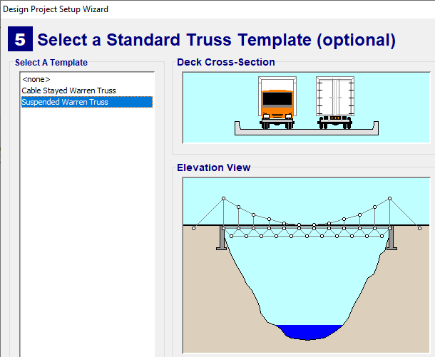
; BR |
Dissenyeu un pont amb el codi ** BRI54A ** i la plantilla ** Truss de coberta contínua ** per tenir el menor cost possible.
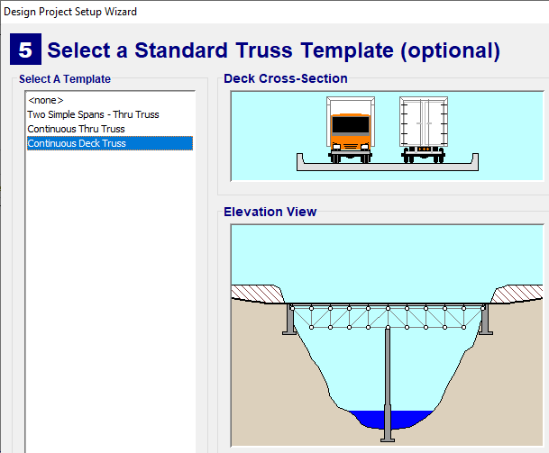
; BR |
Dissenyeu un pont amb el codi ** BRI02A ** i sense plantilla (trieu <No> plantilla). El pont es dissenyarà a continuació a la imatge següent.
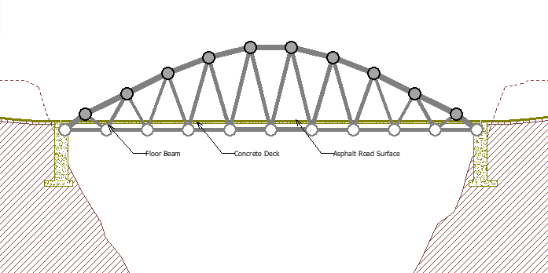
; BR |
El pont ha de tenir el cost menys possible.
Dissenyar un pont amb el codi ** BRI76A ** i forma lliure. Es poden utilitzar cables de suspensió i suport central.
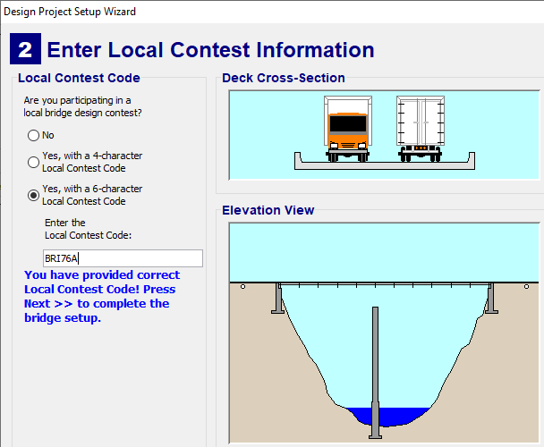
El pont ha de tenir el cost menys possible.